|
|
Color Blend Hardware
Color Blend Hardware
Equation 1 Blend Equation Antialiasing
The reasoning behind this equation will become evident in the discussion of the antialiasing algorithm discussed later in this document.
The four input operands (p, a, m, b) each have four possible sources so two bits are needed to control each mux. This gives a total of 8 bits per cycle of blend mux control. Since the pipeline can operate in one or two cycle mode (see g*DPSetCycleType( )) the blender must select which of the sets of mux controls to use depending on the cycle type (G_CYC_1CYCLE or G_CYC_2CYCLE) and an internal cycle counter. The sources for the p and m muxes are identical and are shown in the following table.
For select 0, the cycle select is built into the hardware. The ‘blended RGB’ refers to the numerator result of the blend equation, Equation 1, on the first cycle (it’s fed back as an input). Note that this will only work if the b mux is set to 1.0 - a, since only the numerator of the blend equation is provided to the input mux. Register RGBs refer to colors which can be set using the g*DPSetFogColor( ) and g*DPSetBlendColor( ) commands. Colors set using these commands are stored in registers within the RDP. Care must be taken to make sure that a g*DPPipeSync( ) command is issued previous to setting these registers. The g*DPPipeSync( ) command inserts a delay into the RDP pipe so that a previous primitive is guaranteed to be finished processing before the register is updated. It is anticipated that the user will set a group of attributes, process many primitives, set a new group of attributes, etc. The syncs are exposed to the user who can more likely determine the minimum number of syncs needed than would be possible in hardware.
Note: Primitive color, g*DPSetPrimColor( ), primitive depth, g*DPSetPrimDepth( ), and scissor, g*DPSetScissor( ), are attributes that do not require any syncs.
The sources for the a muxes are shown in the following table.
The sources for the b muxes are shown in Table 3, below.
In general, the RDP pipeline operates on RGBA pixels with 8 bits per component. The 1.0 in Table 3 assumes the alpha is a number between 0.0-1.0. These numbers are actually fixed point and the output of the a and b alpha muxes have less resolution (5 bits) than the color components (8 bits) to reduce hardware cost. When this alpha is changing slowly across a face, Mach banding can occur due to the reduced number of discrete steps in the alpha channel.
Two dither commands can be used to reduce Mach banding effects:
g*DPSetColorDither( ), and g*SetAlphaDither( ).
These commands basically add a small amount of randomness (1/2 of an LSB) to the color and/or alpha which makes the Mach banding less noticeable. The g*DPSetColorDither( ) command also controls the dithering of RGB from 8 to 5 bits per component (for use in 5/5/5/1 pixel mode).
There are two variations of dithering that can be set using the g*DPSetColorDither( ) command. One is a screen coordinate based dither (G_CD_MAGICSQ or G_CD_BAYER) in which the dither matrix changes based on the location of the pixel on the screen. In other words, the dither pattern is registered to the screen. The noise dither (G_CD_NOISE), on the other hand, adds pseudo-random noise with a very long period into the LSBs of each pixel. In this mode, the dithering is not registered to the screen and will vary from frame to frame. Of course, you can disable color dithering altogether using the G_CD_DISABLE parameter.
Alpha dithering (g*DPSetAlphaDither( )) for screen-based dither patterns uses the same matrix that is selected by the g*DPSetColorDither( ) command. However, the user may invert the pattern, G_AD_NOTPATTERN, or simply pass the pattern through unchanged, G_AD_PATTERN. The user may also select the noise pattern using G_AD_NOISE, or disable alpha dithering altogether using G_AD_DISABLE.
Note: The dithering of the RGB from 8 bits to 5 bits by adding 3 lsbs of noise to the original 8 bits (with clamping to prevent wrapping) is enabled even in 32 bit mode (8/8/8/8), where there is no truncation to be done. Since this one mode bit controls both RGB dither and alpha dither (which always is needed, even in 32 bit mode), opaque things should have the dither bit off in 32 bit mode (so the 3 lsbs don’t get stepped on), but transparent things should have this bit on in 32 bit mode, since the noise from the alpha will be of the same order as the noise gratuitously added to the RGB.
Fog
From the blend equation, Equation 1, you can see that these selects perform a linear interpolation between the fog color and the color combiner output color.
Equation 2 Fog Blend Equation
The command g*DPSetRenderMode( ) is used to control these muxes as well as other blender modes. The command g*DPSetRenderMode (G_RM_FOG_SHADE_A, G_RM_FOG_SHADE_A) implements the mux controls for this fog effect in G_CYC_1CYCLE mode. Typically, this effect would be used only in G_CYC_2CYCLE mode, with the second cycle performing the blend of the pixel with memory. For example, g*DPSetRenderMode (G_RM_FOG_SHADE_A, G_RM_AA_ZB_OPA_SURF2) enables fog while rendering antialiased, z-buffered, opaque surfaces. In G_CYC_1CYCLE mode, only the fogging operation would be performed (no blend).
Coverage Calculation
Equation 3 Stored Coverage
When the pixel is read from memory, a one is automatically added to restore the actual coverage before it is used in calculations.
It is interesting to note that the Video Filter is concerned primarily with partially covered pixels around the silhouette edges of objects (please see Section 15.6, “Video Filter”). Also, the antialiasing performed by the blender uses information about coverage wraps, i.e. when the sum of memory coverage and pixel coverage are greater than 1.0. Because of this, the frame buffer is initially cleared such that the coverage bits are all one. Please see Section 15.5.6, “Color Image Format."
Alpha Compare Calculation
Note: When rendering in G_CYC_COPY or G_CYC_FILL, you should use the RenderMode G_RM_NOOP to make sure that reading of Z and color is disabled.
You can achieve a texture edge effect in G_CYC_COPY mode, however, by using the pixel alpha thresholded with the blend register alpha (g*DPSetBlendColor( )). Figure 15.5.1 shows that write enables are generated when the texel alpha is greater than or equal to blend alpha for 8-bit framebuffers. Also, note that for 16-bit RGBA texels there are no compares, the alpha bit simply acts as a write enable. Threshold alpha compare mode may be set by the following command:
g*DPSetAlphaCompare(G_AC_THRESHOLD).
Note: Alpha compare only works in G_CYC_COPY mode for the 16-bit RGBA color and 8-bit image types. You cannot copy the 32-bit RGBA color image type.
Figure 15.5.1 Alpha Compare in Copy Mode for 8-bit Framebuffer
Another alpha compare mode uses a hardware generated pseudo-random number as the threshold alpha. To set this mode, use g*DPSetAlphaCompare(G_AC_DITHER).
Both G_AC_DITHER and G_AC_THRESHOLD can be used in G_CYC_1CYCLE or G_CYC_2CYCLE mode as well. In these modes, you can readily change the pixel’s alpha from frame to frame, allowing various fade effects. In order to get the alpha of the pixel to the comparators, you must set the ALPHA_X_CVG and ALPHA_CVG_SEL bits properly. Figure 15.5.2, shows a block diagram of the coverage/alpha combiner and alpha comparator logic. These controls are usually set as part of the g*DPSetRenderMode command. For example, the command g*DPSetRenderMode (G_RM_TEX_EDGE, G_RM_TEX_EDGE2) will do the right thing with these mode bits. Please see Section 15.7, Table 2, "Antialiased Non-Z-Buffered Rendering Modes, G_RM_AA," for details on which bits are set for a particular RenderMode.
For rendering effects such as smoke, clouds, or explosions, set the texture alpha to the outline of the smoke or explosion and render the texture onto a transparent polygon so that one can see through the smoke to the objects behind.
In this situation, the correct g*DPSetRenderMode( ) to use is G_RM_ZB_CLD_SURF or G_RM_CLD_SURF.
This ‘cloud’ mode preserves the antialiasing of objects behind the cloud primitive, unlike TEX_EDGE and XLU_SURF modes.
Figure 15.5.2 Alpha Compare in One/Two-Cycle Mode
Blender ADD Mode
The blend mux selects input operands for the blender hardware. The controls for these muxes are in the RDP’s SetOtherModes modeword. There are two sets of mux controls, one for each of the two possible rendering cycles.
The blend equation is of the form:
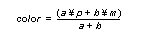
Mux Select
Source
0
first cycle - pixel RGB, second cycle - blended RGB from first cycle
1
1 memory RGB
2
blend (register) RGB
3
fog (register) RGB
Mux Select
Source
0
color combiner output alpha
1
fog (register) alpha
2
=(stepped) shade alpha
3
0.0
Mux Select
Source
0
1.0 - ‘a mux’ output
1
memory alpha
2
1.0
3
0.0
Suppose we want to “fog out” from an image to a constant color as a function (set up in the RSP) of depth. We will assume the fog parameter is set up (per vertex) in the stepped alpha of the shaded triangle primitive (see Section 11.8, “Vertex Fog State”). We will use the fog register color (g*DPSetFogColor()) as the color to fade too. We will use the stepped shade alpha as a control to determine how much of the fog color is used. The first cycle blend mux selects in Table 4, “Fog Mux Controls,” will achieve this effect.
Mux Select
Source
P
select 0, pixel RGB
A
select 2, stepped shade alpha
M
select 3, fog register color
B
select 0, 1.0 - stepped shade alpha
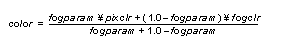
From the previous discussion in Section 15.3, “Coverage Unit," coverage is a 4-bit value that indicates how many subpixels are occluded by a primitive. Note that a coverage of zero indicates that no subpixels were covered and the pixel does not need to be written to the frame buffer. Because there are only 3 bits of coverage available in the frame buffer, the coverage stored is actually:
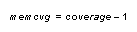
From Section 12.1.4, “Fill Mode” and Section 12.1.5, “Copy Mode," you will notice that in G_CYC_COPY and G_CYC_FILL modes the blender hardware is bypassed and the fill color or image is written with no opportunity for read/modify operations.
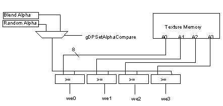
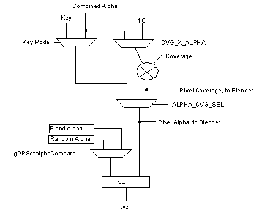
A special blender mode has been implemented that allows the pixel color to be added to the memory color:
#define RM_ADD(clk) \
IM_RD | CVG_DST_SAVE | FORCE_BL | ZMODE_OPA | \
GBL_c##clk(G_BL_CLR_IN, G_BL_A_FOG, G_BL_CLR_MEM, \
G_BL_1)
#define G_RM_ADD RM_ADD(1)
#define G_RM_ADD2 RM_ADD(2)
Several notes about this mode:
Color Image Format
The are three color image formats: 32-bit RGBA, 16-bit RGBA, and 8-bit. In addition, there are hidden bits that are available to the RDP memory interface but not readily visible to the programmer, see Figure 15.5.3. These hidden bits come from the fact that the RCP uses 9-bit RDRAMs. For 16-bit RGBA types, the hidden bits are used for storing coverage. For 32-bit RGBA types, the 3 coverage bits are stored as the 3 MSBs of the 8-bit alpha channel and the hidden bits are ignored. Note that the 32-bit RGBA mode does not provide increased alpha resolution. For 8-bit color images, the hidden bits are ignored.
There hidden bits are logically the 2 LSBs of each 18-bit word. For memory accesses from other than the RDP memory interface (MI), only a 16-bit word is read/written. Other masters can indirectly set or clear the hidden bits by setting or clearing the LSB of the 16-bit word, respectively. For example, if the CPU writes the 16-bit binary value 10101010_10101010 to memory, the memory interface will actually write the 18-bit binary value 10101010_10101010_00. On the other hand, if the CPU writes the 16-bit binary value 01010101_01010101, the memory interface will actually write the 18-bit binary value 01010101_01010101_11.
Figure 15.5.3 Hidden Bits
| 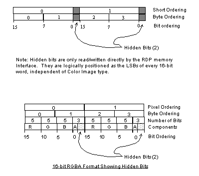 |
Figure 15.5.4, "Color Image Formats," describes the logical frame buffer formats.
Image Alignment Requirements
The color image pointer, g*DPSetColorImage(), and the depth image pointer, g*DPSetDepthImage( ), should be aligned to 64-bits, i.e. the 3 LSBs of the pointer should be zero.
Figure 15.5.4 Color Image Formats
| 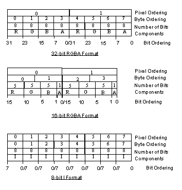 |
Z Calculation
As mentioned in the Section 15.4, “Z Stepper,” g*DPSetDepthSource( ) selects the source of Z for the depth compares used in the z-buffer algorithm. This selects between primitive Z (a register), g*DPSetPrimDepth( ), and stepped Z (from the triangle or line). G*DPSetDepthSource( ) also selects between primitive DeltaZ (a register) and stepped DeltaZ. The 16 bit primitive Z register can supply the 15 integer bits of the Z value and the 16 bit deltaZ register can supply the 16 bits of the DeltaZ value.
For each z-buffered primitive, the change in Z per pixel change in the X and Y directions are calculated in the RSP as part of setup. These values are used in the z-buffer logic of the blender to create a composite DeltaZ for the pixel.
| 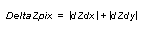 |
The DeltaZ value is important in determining surface correlation-- that is, whether this pixel is part of the same surface as the pixel that is stored in memory. When computing whether the pixel is part of the same surface, the worst case DeltaZ is used:
Equation 5 Max DeltaZ Calculation
| 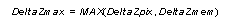 |
The z-buffer compare equations are:
Equation 6 Max Z Test
| 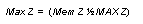 |
Equation 7 Farther Compare
| 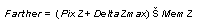 |
Equation 8 Nearer Compare
| 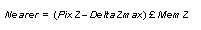 |
Equation 9 In Front Compare
These signals are used along with coverage information to determine surface correlation for various antialiasing modes. Please see Section 15.7, “Blender Modes and Assumptions."
Z Image Format
The Z-buffer logic in the blender uses a fixed point, 0,15.3, 18 bit number for Z calculations. The delta Z is a 16 bit quantity that is used as a s15 number. The linear 18-bit Z that is stepped, is converted to a 14 bit floating point format before being stored. This encoding is shown in the following figure, "Z Encoding."
Figure 15.5.6 Z Encoding
| 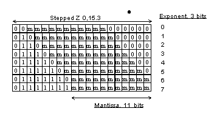 |
Three bits are stored for the exponent and 11 bits are stored for the mantissa. Here is some psuedo code for converting from the format stored in memory to the Z format used in calculations:
/*
* Convert 11 bit mantissa and 3 bit exponent
* to 0,15.3 number
*/
struct {
int shift;
long add;
} z_format[8] = {
6, 0x00000,
5, 0x20000,
4, 0x30000,
3, 0x38000,
2, 0x3c000,
1, 0x3e000,
0, 0x3f000,
0, 0x3f800,
};
zvalue = (mantissa << z_format[exponent].shift) +
z_format[exponent].add;
Notice that converting from a 18 bit fixed point number to a 14 bit floating point number, some precision may be lost. The lose of precision is greatest for small exponents. The highest precision is saved for large Z values, that is, for objects that are far away from the eye.
The DeltaZ is also encoded into 4 bit integer for storage into the Z-buffer using the following equation:
Equation 10 DeltaZ Encoding
| 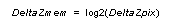 |
This is just a priority encoding of the DeltaZ value. The bit number of the most significant bit that has a value of one is stored. The memory format for the Z and DeltaZmem is shown in Figure 15.5.7.
Figure 15.5.7 Z Memory Format
| 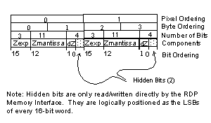 |
Z Accuracy
The plot in shows the worst-case percent error in Z relative to the near and far planes.
Figure 15.5.8 Z Worst-Case Error
| 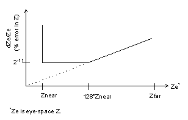 |
|
Copyright © 1999 Nintendo of America Inc. All Rights Reserved Nintendo and N64 are registered trademarks of Nintendo Last Updated January, 1999 |